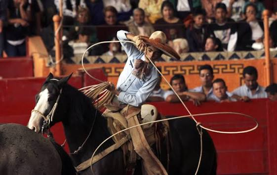

CHARRERIA

La charrería es el deporte nacional de México y una tradición viva que combina destrezas ecuestres, faenas ganaderas, música y trajes típicos. Fue declarada Patrimonio Cultural Inmaterial de la Humanidad por la UNESCO el 1 de diciembre de 2016.
- Historia
Nacimiento: Surgió en el siglo XVI en las haciendas ganaderas del centro y norte de México (con fuertes raíces en estados como Hidalgo —considerada la cuna de la charrería— y Jalisco).- Evolución: Nació de la necesidad de controlar, manejar y marcar el ganado a caballo. Con el tiempo, las labores del campo se transformaron en un espectáculo y una disciplina deportiva.
- En 1933 se fundó la Federación Mexicana de Charrería para regular y unificar el deporte a nivel nacional e internacional.
- Las 9 Suertes Charro-Oficiales
- La calada de caballo: Demuestra la buena rienda, educación y obediencia del caballo.
- Los piales en el lienzo: El charro debe detener a una yeguas corriendo mediante un lazo lanzado a las patas traseras
- El coleadero: Consiste en correr detrás de un toro, sujetarlo de la cola y derribarlo en la arena
- El jineteo de toro: El charro monta un toro bravo hasta que este deja de buscar sacudírselo.
- La terna en el lienzo: Tres charros lazo al toro: uno en la cabeza, otro en las patas, para derribarlo de forma coordinada
- El jineteo de yegua: Similar al jineteo de toro, pero sobre una yegua bruta.
- Las manganas a pie: El charro a pie laza a la yegua de las patas delanteras y la hace girar.
- La Escaramuza Charra
- Participación femenina: Las mujeres charras integran las escaramuzas.
- En qué consiste: Grupos de amazonas montan a mujeriegas (de costado) y realizan complejas y veloces coreografías ecuestre s al ritmo de música tradicional (como Adelita), luciendo coloridos vestidos de indumentaria tradiciona
- El traje de charro: Compuesto por sombrero de a la ancha (de fieltro, gamuza o pelo), chaqueta bordada, camisa de cuello alto, pantalón fino ajustado, botines de piel y corbata de mozo (generalmente dequistada en seda). Es reconocido mundialmente como un símbolo de la identidad mexicana